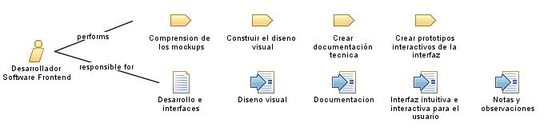

| Role: Desarrollador Software Frontend |
| |
 |
| El desarrollador debe implementar y programar todo los mockups que esten agregados al proyecto |
|
Relationships
 |
| Primary Performs |
|
| Modifies |
|
Main Description
El desarrollador de software frontend se encarga de la creación y desarrollo de la interfaz de usuario y la experiencia
del usuario en una aplicación o sitio web. Su trabajo se centra en el diseño, desarrollo y implementación de la parte
visual y funcional que los usuarios ven y con la que interactúan directamente. Algunas de las principales funciones y
propósitos del desarrollador de software frontend incluyen:
-
Diseño de la interfaz de usuario: El desarrollador frontend colabora con diseñadores y expertos en
experiencia de usuario para traducir los diseños en elementos visuales y funcionales. Se encarga de crear diseños
atractivos y agradables, asegurando una interfaz intuitiva y fácil de usar para los usuarios.
-
Desarrollo de la interactividad: El desarrollador frontend utiliza lenguajes de programación como
HTML, CSS y JavaScript para implementar la interacción y funcionalidad de la interfaz de usuario. Esto implica la
creación de botones, formularios, menús desplegables, animaciones y otras características interactivas.
-
Optimización del rendimiento: El desarrollador frontend se asegura de que la interfaz de usuario
sea rápida y eficiente en términos de carga y respuesta. Optimiza los recursos y utiliza técnicas como la
compresión de archivos, la caché y la carga asíncrona para mejorar la experiencia del usuario y reducir los tiempos
de carga.
-
Adaptabilidad y responsividad: El desarrollador frontend se ocupa de que la interfaz de usuario se
adapte y sea compatible con diferentes dispositivos y tamaños de pantalla. Utiliza enfoques de diseño responsivo y
técnicas de diseño adaptable para garantizar que la interfaz se vea y funcione correctamente en computadoras de
escritorio, tabletas y dispositivos móviles.
-
Integración con el backend: El desarrollador frontend colabora con el equipo de desarrollo backend
para establecer la comunicación y la integración adecuadas entre la interfaz de usuario y el sistema o la
aplicación subyacente. Esto implica trabajar con API, servicios web y bases de datos para enviar y recibir datos de
manera eficiente.
-
Pruebas y depuración: El desarrollador frontend realiza pruebas exhaustivas para identificar y
solucionar posibles problemas y errores en la interfaz de usuario. Realiza pruebas de compatibilidad entre
navegadores, pruebas de usabilidad y verifica que todas las funciones se ejecuten correctamente.
-
Mejora continua: El desarrollador frontend se mantiene actualizado con las últimas tendencias,
tecnologías y estándares en el desarrollo web. Busca constantemente formas de mejorar la experiencia del usuario y
la eficiencia del código, adoptando nuevas herramientas y técnicas que impulsen el desarrollo frontend.
|
Staffing
| Skills | el desarrollador de software frontend se encarga de la creación y desarrollo de la interfaz de usuario y la
experiencia del usuario en una aplicación o sitio web. Su objetivo principal es garantizar una interfaz atractiva,
funcional y fácil de usar para los usuarios finales. |
| Assignment Approaches |
El enfoque de asignación de un desarrollador de software frontend puede variar según el contexto y las necesidades del
proyecto. A continuación, se presentan algunos enfoques comunes de asignación para un desarrollador de software
frontend:
-
Desarrollador frontend exclusivo: En este enfoque, el desarrollador se dedica exclusivamente al
desarrollo frontend y se le asignan tareas específicas relacionadas con la interfaz de usuario y la experiencia del
usuario. Se enfoca en el diseño, desarrollo y optimización de la interfaz de usuario, trabajando en estrecha
colaboración con diseñadores y expertos en experiencia de usuario.
-
Desarrollador frontend full-stack: Algunos desarrolladores frontend también tienen habilidades en
el desarrollo backend. En este caso, el enfoque de asignación implica que el desarrollador trabaje tanto en el
frontend como en el backend, participando en el desarrollo completo de la aplicación o sistema. Puede encargarse
tanto del diseño y desarrollo de la interfaz de usuario como de la implementación y gestión de la lógica del
servidor.
|
Key Considerations
| Una consideración clave de los desarrolladores de software frontend es que deben tener un buen diseño para las plataformas
que hacer para que sea amigable con el usuario y este no se aburra de la plataforma. |
|